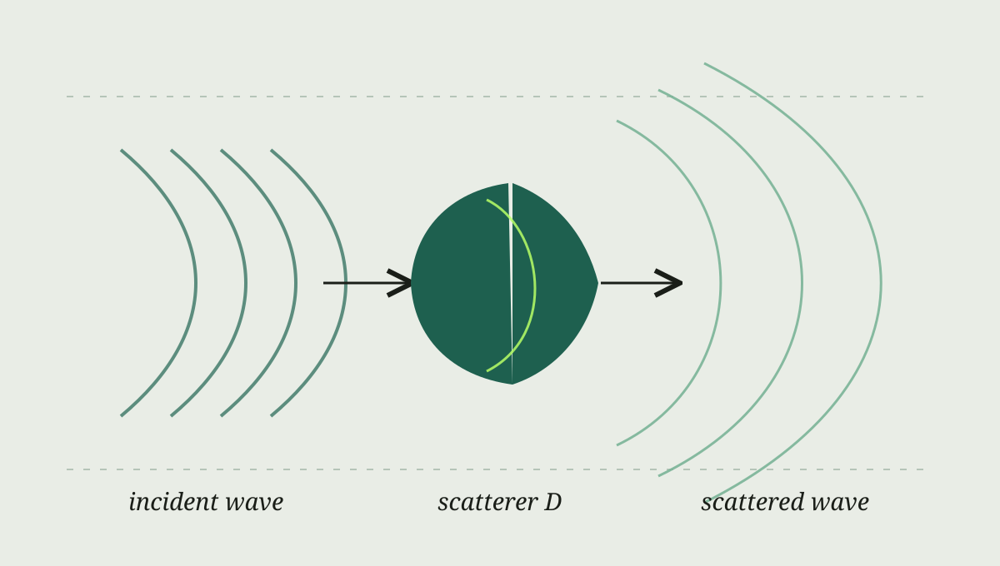

写作示范
这篇文章是排版样例，并非我的新研究结果。正式发布博客时，可复制这个文件，替换标题、正文、图片和公式。
波散射问题可以从一个直观场景开始：已知的入射波照向物体，物体改变波的传播方向，我们在远处或边界上记录响应。数学模型会随声波、电磁波或弹性波而变化。为了展示公式排版，这里先用标量声波模型。

最简化的方程
若 \(D\) 表示散射体，\(k\) 表示波数，那么在散射体外部，场 \(u\) 满足 Helmholtz 方程：
\[
\Delta u + k^2u = 0
\qquad \text{in } \mathbb{R}^2 \setminus \overline{D}.
\]
总场可以写成入射场和散射场之和，即 \(u=u^{\mathrm{inc}}+u^{\mathrm{sc}}\)。完整问题还需要边界条件和远场辐射条件；不同的物理模型会给出不同的条件。
正问题与反问题
正问题从物体的形状和介质参数出发，计算观测到的波。反问题的方向相反：从观测数据推断物体的位置、形状或材料性质。实际研究中，多粒子相互作用和复杂背景介质会显著增加计算难度。
我与合作者关于三维多粒子弹性散射快速求解的早期工作可见 arXiv:2204.03302。这里的标量模型只是教学示意，具体论文使用的是弹性波模型。